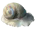
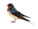

Correspondence Grimoire
Fertility

Moon Snails
SwallowsThe Bed as Altar
In fertility magick, the conjugal bed is not merely furniture, it is a primary sacred space, treated as one would any ritual altar. It can be spiritually cleansed, adorned with meaningful objects, hung with charms and talismans, and consciously demarcated as an enchanted space. Spells that incorporate the bed work by suffusing the most intimate space in the home with fertility energy, so that rest and lovemaking both occur within an already-charged field of intention.
Magick's Most Primordial Subject
Of all the purposes to which magick has ever been turned, wealth, luck, love, healing, power, none is older or more intrinsic than fertility. The earliest known religious traditions were not preoccupied with death but with generation: with the mysteries of birth, life, and the creative force that perpetuates both. Their sacred images were not skulls or tombs but the human genitals, rendered in clay, carved into stone, worn close to the body.
Language preserves the trace of this. The word venerate shares its root with Venus, venerable, and venereal, all branching from the same ancient source, a concept encompassing love, desire, and the sacred power of generation.
Fertility and Magick Are the Same Force
The kinship runs deeper than metaphor. Magick, at its core, attempts to create something that did not previously exist, to bring the possible into the actual. This is precisely what generation does. It is no coincidence that the spirits most intimately involved with magick are the same ones governing human reproductive capacity: Hekate, Artemis, Yemaya, Baba Yaga, Freya, Oshun, Áine, and many others all hold dominion over both.
Magickal tools carry this association as well. Mortars and pestles, sieves, cauldrons, broomsticks, wands, and staffs are simultaneously fertility symbols. Their power is drawn, at least in part, from their resonance with the generative act. To some extent the phrase sex magick is redundant: the sexual act is inherently magickal. Like any magickal working, it can be performed well or badly, with intention or without, honored or profaned. Violence and coercion destroy its sacred dimension entirely.
Reproductive Control, Not Just Conception
Fertility magick is not simply about having children. The operative concept is control over one's own reproductive capacity, the power to conceive when and if one chooses, and equally, to prevent conception when one does not. The earliest magickal systems were also medical systems; no sharp line divided the two. Holistic traditions gave as much attention to botanicals that prevent or end pregnancy as to those that encourage it. Many of the most revered witch-spirits, Hekate, Kybele, Artemis, Baba Yaga, were master herbalists whose knowledge of plants served both ends.
Fertility magick also extends beyond literal conception. The same generative force that creates life also creates art, music, writing, and all other forms of making. These spells may be adapted freely to stimulate creative fertility of any kind.
Fertility as Latent Capacity
Fertility is not a thing one either has or lacks, it is a capacity that exists to be drawn upon when desired. In this sense it closely resembles one's capacity for magick itself: one need not cast a spell every day, but the power should be available when called upon. Whether one intends to conceive or never to conceive, the aim of fertility magick is to keep that capacity intact, available, and under one's own authority.
A Note on Magick and Conception
Fertility magick works in concert with, not in place of, the physical act of conception. No working, however well-crafted or potently supplied, can substitute for well-timed sex. These spells are aids, amplifiers, and aligners, not replacements.
Botanicals of Fertility
Many fertility-boosting plants announce their power through visible signs: a resemblance to human genitalia, a close affiliation with the moon, or seeds produced in such extravagant quantity that abundance seems to be their nature. Botanicals that fall into one or more of these categories include assorted snake roots, black-eyed peas, corn, figs, jasmine, lilies, lotuses, melons, moonflowers, mugwort, assorted nuts, olives, pomegranates, poppies, pumpkins, roses, and wheat.
Candle Magick for Fertility
Candlelight is a natural companion to fertility workings. Red candles are the most common choice, though figure candles carry particular resonance: a single human figure representing the spell-caster, or a conjoined male-and-female figure candle. Other potent forms include red cat candles, red witch candles, snake candles, and candles cast in the shape of hearts or genitalia. Each of these shapes carries symbolic weight that amplifies the central intention.
Botanical Safety Warning
The boundaries between fertility magick and traditional botanical medicine are especially fluid and require particular care. Many botanicals used to encourage conception in cases of serious infertility are unsafe during pregnancy itself, particularly in the early weeks. Topical application, in baths or massage oils, can be as potent as or more potent than internal use. As a general rule, essential oils should be avoided during pregnancy, especially in the first trimester. Choose spells and botanicals carefully and consult relevant safety resources before working with any plant material in a reproductive context.